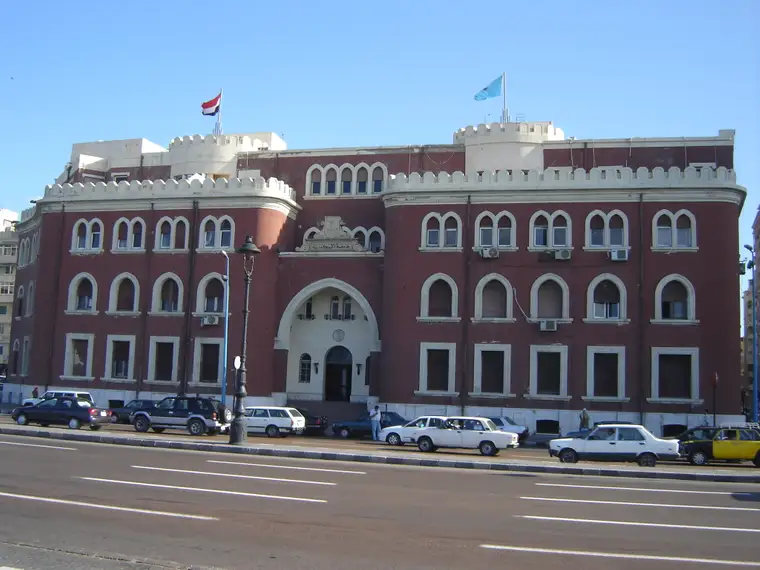

جامعة الإسكندرية

جامعة الإسكندرية هي إحدى أكبر الجامعات في مصر، وثالث جامعة أنشئت بعد جامعة القاهرة والجامعة الأمريكية في القاهرة. تضم جامعة الإسكندرية 21 كلية و3 معاهد تدرس مختلف أنواع العلوم الاجتماعية والطبية والهندسية والرياضية وغيرها، وكان للجامعة فروعًا أخرى في مصر خارج مدينة الإسكندرية في دمنهور ومطروح والتي تحولت في وقت لاحق لجامعتين مستقلتين، وتم إنشاء فروع أخرى للجامعة خارج مصر في جوبا في جنوب السودان، وفي إنجامينا عاصمة جمهورية تشاد، وتتبع جامعة الإسكندرية مثل معظم باقي الجامعات المصرية لإشراف المجلس الأعلى للجامعات، وهو جهاز حكومي يقوم برسم السياسة العامة للتعليم بالجامعات المصرية.الدكتور طه حسين (عميد الأدب العربي)هو أول من تولى رئاسة جامعة الإسكندرية (1942-1944)
نبذة تاريخية
يرجع تاريخ إنشاء الجامعة إلى عام 1938، وذلك في عهد الملك فاروق، وكانت الجامعة تضم وقت إنشائها كلية الآداب وكلية الحقوق، ثم تلى ذلك إنشاء كلية الهندسة عام 1941، تم تسمية الجامعة جامعة فاروق في عام 1942، وأعقب هذا إنشاء أربعة كليات جديدة هي كلية الطب، كلية التجارة، كلية العلوم، وكلية الزراعة. وبعد قيام ثورة يوليو سنة 1952 تم تغيير اسم الجامعة إلى مسماها الحالي "جامعة الإسكندرية"، ومنذ ذلك الحين أضيفت للجامعة الكثر من الكليات الأخرى مثل كلية التمريض، كلية الصيدلة، كلية طب الأسنان، كلية التربية، وآخر كلية تم إنشائها في الجامعة كانت كلية السياحة والفنادق أنشئت عام 1983، وفي سبتمبر 1989 ضمت جامعة الإسكندرية إليها الكليات والمعاهد التابعة لجامعة حلوان بالإسكندرية، وهي كلية التربية الرياضية للبنين، كلية التربية الرياضية للبنات، كلية الفنون الجميلة، وكلية الزراعة بمنطقة سابا باشا.
مكانة الجامعة عالميا
حصلت جامعة الاسكندرية على المرتبة 801-1000 عالميًا والمرتبة 16 عربيًا حسب تصنيف الـ QS لعام 2020. حيث تأسست الجامعة سنة 1938 كفرع لجامعة القاهرة، لكنّها استقلّت عنها لتصبح كيانًا تعليميًا منفصلاً سنة 1942 ويُطلق عليها اسم "جامعة الاسكندرية" سنة 1952. توسّعت الجامعة من 7 كليات حتى 22 كلية وهي في طريقها لتأسيس فرع لها في مدينة جوبا في السودان. كما تضمّ حاليًا حوالي 152305 طالبًا مسجّلاً فيها.
كليات ومعاهد جامعة الإسكندرية
كلية الطب (1942).
كلية الهندسة(1942).
كلية العلوم (1942).
كلية التجارة (1942).
كلية التربية للطفولة المبكرة(1989).
كلية الحقوق (1938).
كلية الفنون الجميلة (1957).
كلية الصيدلة (1947).
كلية الزراعة (1942).
كلية الزراعة سابا باشا (1959).
كلية طب الأسنان (1970).
كلية الطب البيطري (1975).
كلية التربية (1966).
كلية السياحة والفنادق (1982).
كلية التمريض (1954).
كلية الآداب (1938).
كلية التربية الرياضية للبنبن (1955).
كلية التربية الرياضية للبنات (1954).
كلية التربية النوعية (1988).
معهد البحوث الطبية(1975).
معهد الدراسات العليا والبحوث (1972).
المعهد العالى للصحة العامة(1956).
كلية الدراسات الاقتصادية والعلوم السياسية(2014).
كلية الحاسبات وعلوم البيانات (2019).
لينك الصفحة الرئيسية للجامعة
لينك صفحة الفيسبوك
لتقييم الجامعة
لمشاهدة تقييمات الجامعات